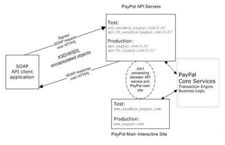

Ketika aplikasi berbasis web menjadi salah satu teknologi penunjang yang menghubungi pelanggan, rekan bisnis dan karyawan kepada aplikasi perusahaan melalui jaringan internet, e commerce berkembang pesat menjadi suatu aplikasi berbasis web yang mengakomodasi berbagai kebutuhan pelanggan. E commerce yang merupakan istilah dari perdagangan berbasis elektronik mengharuskan perusahaan untuk melakukan integrasi antara sisi internal dan eksternal proses bisnis mereka kepada era teknologi dan informasi berbasis aplikasi web.
Ketika perusahaan melibatkan proses bisnis mereka melalui jaringan intranet, extranet kemudian melalui jaringan internet, e commerce berhasil menekan sisi biaya, menjangkau pemasaran lebih luas dan meningkatkan hubungan bisnis mereka kepada rekan bisnis. Seiring dengan berkembangnya e commerce, perusahaan berhasil meraih keuntungan bisnis, salah satu contoh perusahaan yang berhasil meraih keuntungan terbesar melalui e commerce adalah Amazon.com. Bagaimanapun juga keberhasilan yang diraih oleh e commerce melalui jaringan internet memiliki beberapa resiko finansial dalam bertransaksi.
Melihat pada resiko keamanan secara finansial dalam bertransaksi e commerce, banyak industri atau perusahaan yang meng-integrasikan aplikasi berbasis web mereka dengan
provider keamanan transaksi atau perusahaan yang berfokus pada keamanan transaksi. Untuk mempermudah dalam memahami sisi arsitektur dan skalabilitas aplikasi web untuk
diintegrasikan dengan provider keamanan transaksi, maka diambil salah satu contoh provider security( keamanan transaksi) yaitu paypal.

PayPal API Service
Pada gambar diatas dalam model OOP ( object oriented programming ) ini, interface ke SOAP request/response merupakan objek dari bahasa pemograman native yang dapat diintegrasikan ke SOAP dari aplikasi web.
Paypal menyediakan file-file WSDL dan XSD yang secara spesifik merupakan struktur message atau pesan dari paypal, isi data, dan layanan ( service) API dari paypal. Aplikasi bisnis termasuk data didalamnya
berada dan berjalan dalam property objek ini. Untuk mengirim dan menerima data dapat dilakukan dengan metode pemanggilan objek tersebut. Objek SOAP client menangani permintaan membentuk SOAP baru dan
mengirimkan kepada layanan paypal, kemudian layanan paypal memberikan umpan balik atau feedback ke objek SOAP client.
Skema dan prinsip dasar dari web service paypal adalah eBay business language ( eBL ). Dan inti komponen yang diperlukan dalam mengintegrasikan aplikasi web ke layanan paypal adalah API paypal yaitu file-file WSDL dan XSD.
Secara mendasar konsep dan terminology dari API paypal adalah:
Kesimpulan dari ecommerce : pondasi dari ecommerce adalah tekonologi web service yang memiliki skalabilitas untuk diintegrasikan dengan aplikasi lain yang berbeda lokasi dan berbeda provider. Karena e commerce merupakan web service yang terfokus pada bisnis, maka secara implisite commerce memiliki resiko keamanan dalam bertransaksi. Melihat dari resiko keamanan secara finansial, banyak perusahaan bisnis menyerahkan tanggung jawab keamanan bertransaksi online kepada provider lain yang fokus kepada keamanan transaksi. Salah satu arsitektur dari provider yang dibahas adalah paypal. E commerce berbasis web service memiliki kesamaan arsitektur dengan arsitektur yang dimiliki provider security ( paypal ) yaitu API atau application programming language sehingga memiliki kemampuan untuk diintegrasikan ke aplikasi milik provider paypal. Ketika provider security ( keamanan transaksi) seperti paypal terintegrasi melalui internet dengan banyak aplikasi e commerce dari berbagai perusahaan bisnis ( multi tenant ) maka dapat dikatakan ecommerce tersebut berbasis cloud computing. Provider paypal tidak hanya menawarkan layanan security ( keamanan bertransaksi ) secara online melalui aplikasi web tetapi juga menyediakan plug ins untuk payment online berbasis aplikasi.